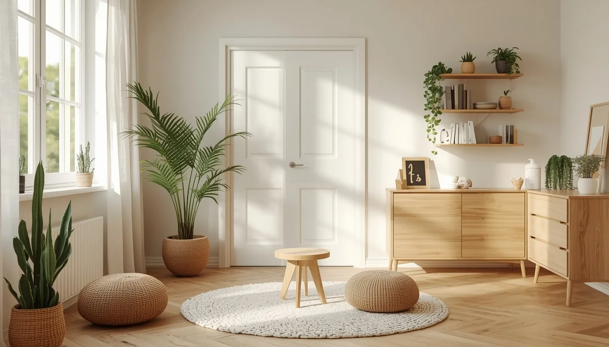
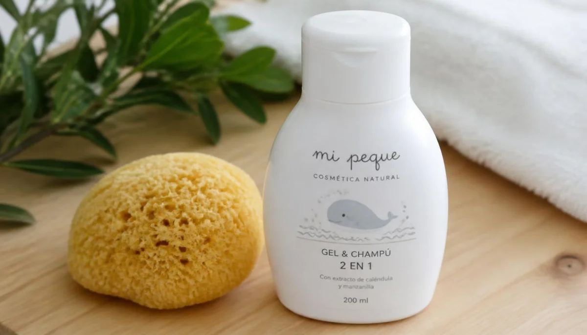

Salud ambiental infantil y reducción de tóxicos
El organismo en desarrollo de los menores es especialmente vulnerable a la exposición acumulativa de sustancias químicas y contaminantes presentes en el entorno cotidiano. Esta guía ofrece pautas sencillas y efectivas para reducir los tóxicos en el hogar, mejorar la calidad del aire interior y construir espacios seguros que favorezcan un crecimiento saludable.

Calidad del aire interior y ventilación del hogar
Estrategias para renovar el aire, reducir compuestos orgánicos volátiles (COV) y evitar la acumulación de contaminantes en las habitaciones infantiles.

Alternativas ecológicas y limpieza sin tóxicos
Cómo sustituir los productos de limpieza convencionales por opciones respetuosas que eviten la exposición de los menores a químicos agresivos.

Menaje seguro, plásticos y almacenamiento de alimentos
Pautas para elegir recipientes libres de bisfenoles y ftalatos, reduciendo la migración de disruptores endocrinos a la comida infantil.

Fibras naturales, ropa de cama y colchones saludables
La importancia de elegir materiales orgánicos libres de tratamientos ignífugos o tintes nocivos en el dormitorio y la ropa de los menores.

Selección de juguetes seguros y libres de químicos
Criterios para identificar juguetes de madera, pinturas naturales y materiales plásticos seguros que eviten riesgos por sustancias tóxicas.

Cosmética infantil, geles y protección cutánea
Cómo leer el etiquetado de lociones, geles de baño y cremas para evitar fragancias sintéticas, parabenos y derivados del petróleo en la piel infantil.

Reducción de campos electromagnéticos en el dormitorio
Pautas sencillas de distanciamiento de dispositivos y routers durante las horas de sueño para proteger el descanso y la salud ambiental.

Calidad del agua de consumo y sistemas de filtración
Evaluación de los recursos hídricos en el hogar y opciones de depuración para garantizar un aporte de agua limpio y libre de impurezas.
🌿 Continúa profundizando en la salud y el bienestar familiar
Para complementar la reducción de tóxicos en el hogar y crear un entorno protector integral, te sugerimos explorar estos recursos:
- 🎙️ Escucha el podcast: Hogares libres de tóxicos y rutinas de ventilación saludable (Ep. 16)
- 📥 Descarga el recurso práctico: Guía rápida de sustitución de químicos e índice de cosmética segura (PDF)